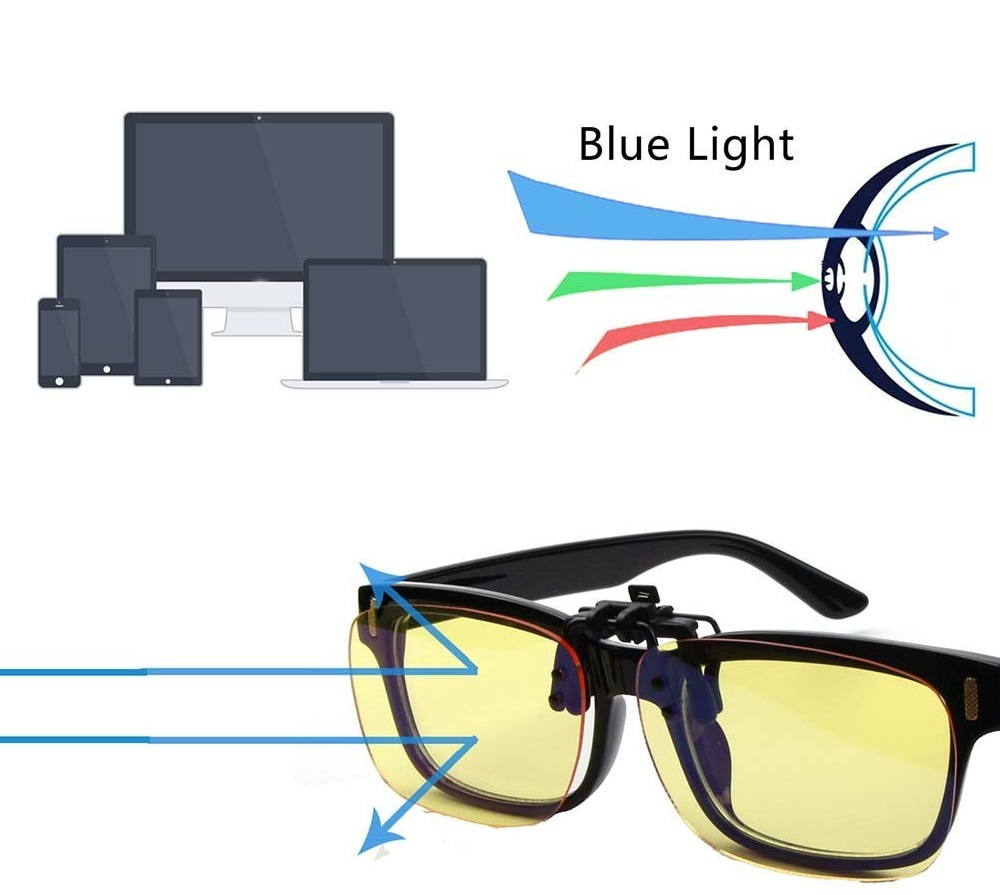

Blue Light Filter Eyeglasses

Description
Homemade Eyeglasses with a Blue Light Filter is a more affordable alternative to other ready to buy eyewear in the market that filter out the harmful side effects of blue light from our various gadgets and home appliances.
The glasses work by reducing and filtering the amount of blue light that enters our cornea by coating a tint of blue blocking color onto the lenses.
Materials
- Blue barrier tint
- Glasses with CR-39 plastic lenses with no-to-minimal coatings
- Lens holder
- Stirrer
- 2 empty containers
- Weighting scale
- Electric burner
- Bowl with cool water
Steps
- Identify the type of frame you are using and how the frame holds the lenses.
- Remove the lenses and place it in a lens holder.
- Prepare the tint solution of choice(yellow,orange,blue).
- Make a visual note of how much water it takes to fully cover the lenses holder when placed inside the container.
- Put the empty container on the weighting scale and fill the container with tap water that is at least 25 percent higher than your visual note.
- Add the tinting solution until it mixes together.
- Cranked up your electric burner to its maximum and submerge your lens.
- Wait for 45mins, while waiting, prepare another container that has a cool tap water in it.
- After the time runs out, take the lenses out immediately and submerge it into the cool water container for at least 30mins.
- Once cooled, clean the lenses with tissue and place it back to its frame
- Product is now completed and ready to use.
back to top